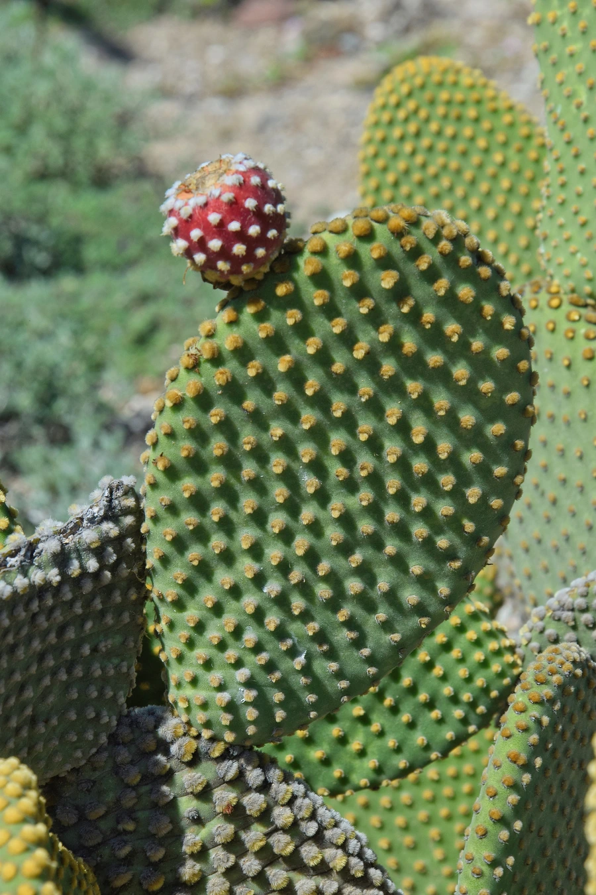

多肉植物 · 植物界
白毛掌 Opuntia microdasys

仙人掌科仙人掌属多肉，扁平茎节上密生白色芒刺，形似兔耳，春季开黄色花，原产墨西哥，是常见的盆栽仙人掌。
- 分类
- 门被子植物门纲木兰纲目石竹目科仙人掌科属仙人掌属
- 栖息环境
- 墨西哥中部干旱地区的石质坡地与灌丛
- 地理分布
- 原产墨西哥中部，世界各地盆栽，中国各地常见
- 保护级别
- 暂无评估；CITES 附录Ⅱ（仙人掌科）
物种志
白毛掌为仙人掌科仙人掌属的肉质灌木，株高 40–60 厘米，茎由扁平的椭圆形节片组成，节片长 6–15 厘米，表面绿色，刺座密集，每个刺座生有一丛白色或淡黄色的芒刺，刺细短、易脱落。花单生于节片边缘，黄色，直径约 4 厘米，花期春季至初夏；果实为球形浆果，成熟时红色。
白毛掌原产墨西哥中部的干旱地区，喜阳光充足、温暖干燥和通风良好的环境，耐旱力强，忌积水。它的茎节扁平、白刺成丛，形似兔耳，因此有“兔耳仙人掌”之称，适合盆栽或组合造景。栽培用排水良好的沙质土，生长期干透浇透，冬季控水并保持 5℃ 以上；繁殖以茎节扦插为主，将节片晾干伤口后插入沙土即可生根。白毛掌的芒刺细小，碰触后容易扎入皮肤，搬动时应戴手套。
形态与习性
- 株高40–60 厘米，茎节长 6–15 厘米
- 茎节扁平椭圆形，刺座密生白色芒刺
- 花期春季至初夏，花黄色，直径约 4 厘米
- 光照喜充足阳光，光照不足茎节变薄
- 水分耐旱，干透浇透，忌积水
- 土壤排水良好的沙质土
- 繁殖茎节扦插，晾干伤口后插入沙土
- 注意芒刺细小易扎手，搬动时戴手套
趣味知识
- 白毛掌的白色“毛”其实是一丛丛细小的芒刺，碰触容易扎手。
- 它的茎节形似兔耳，因此常被称为兔耳仙人掌。
- 芒刺带倒钩，扎入皮肤后不易取出，搬动时宜戴厚手套。